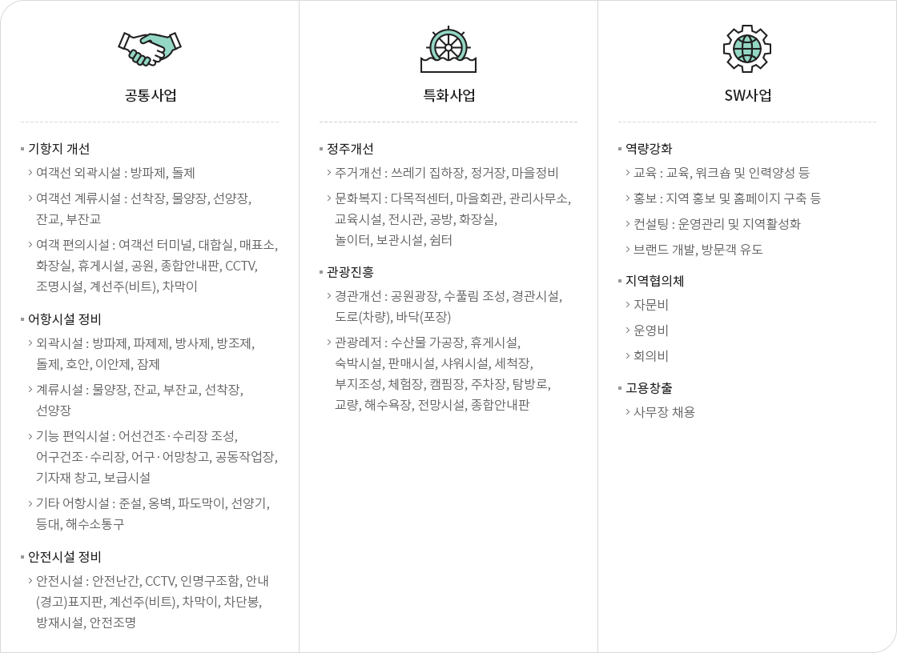
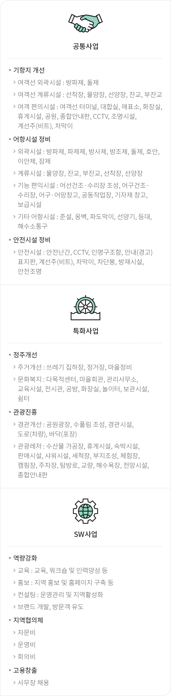

어촌어항재생사업
- 홈
- 사업소개
- 활력있는 어촌
- 어촌어항재생사업
사업목적
- 어촌이 보유한 핵심자원을 활용하여 차별화된 콘텐츠를 발굴하고 어촌․어항 통합개발을 통하여 사업효과 극대화 도모
- 어촌 및 항․포구를 중심으로 인접한 배후 어촌마을을 포함한 통합개발로 사회․문화․경제․환경적으로 어촌지역의 활력 도모
사업개요
| 구분 | 내용 |
|---|---|
| 사업기간 |
|
| 사업부서 |
|
| 법적근거 |
|
사업내용


유형별 특화사업
- 지역특화사업
- 지역의 문화·예술·역사 등을 반영한 해당지역만의 고유시설
- 문화·관광시설
- 문화·복지, 경관개선, 주거개선 등을 위한 시설물
- 지역 소득증대
- 소득기반, 레저·체험, 휴식·휴양등을 위한 시설물
공통사업
- 접안시설 보강
- 경사식 선착장 정비, 물양장 정비 등
- 안전시설 설치
- 안전난간‧차막이 설치, 구조 사다리, CCTV
- 어항구역 경관개선
- 어구어망 보관창고, 경관조명 설치
- 어항 친수시설 설치
- 어부림 조성, 휴식공간(정자, 파고라 등)
- 여객 편의시설
- 대합실, 화장실 등
- 어촌어항재생 협의체 운영
- 협의체 구성 및 운영, 주민역량 강화 교육, 마을브랜드 개발
타부처 연계사업
- 행정안전부, 농림축산식품부
- 마을 지붕담장 경관 개선, 마을 안내판 및 이정표 설치
- 산림청
- 마을 생태숲 조성
- 국토교통부
- 주차장 조성
- 문화체육관광부
- 상징 조형물설치, 오토캠핑장 조성, 마을박물관 건립
- 환경부
- 오수 및 폐수 정화시설 설치, 노후 상수도 정비